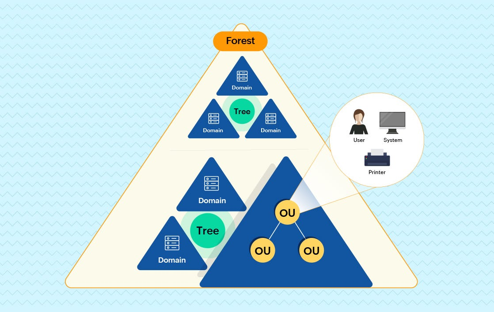

Active Directory Setup
Introduction
This project aims to set up a Server2019 with a private NAT network and enable secure internet access for multiple clients. By leveraging Active Directory, RAS/NAT configuration, and DHCP, the project automates the server setup and user management, making it efficient and user-friendly.
Active Directory Structure
We will begin by deploying a Server2019 and establishing an Active Directory infrastructure. With Active Directory in place, an Organizational Unit (OU) is created to organize and manage the users and clients that will connect to the server.

Once the Active Directory is set up, the project enables private network connectivity by configuring a private
NAT network between the server and the clients. This allows clients to access the internet securely through the
server. Additionally, Remote Access Service (RAS) is set up to facilitate client connections to the server. In
order to assign unique private IP addresses to each client dynamically we will setup DHCP (Dynamic Host
Configuration Protocol).